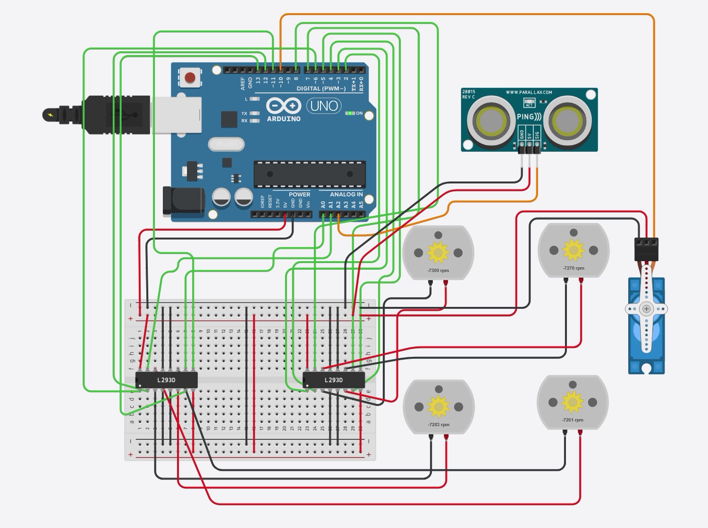

The run, recorded
One capture covers both sketches back to back. The rail under the player is built from timestamps read straight off the simulator's Serial Monitor — click any band to jump.
What sketch 1 commands
This diagram is not traced from the video — it is generated from the sketch's own
constants, so it shows exactly what the program orders each side of the chassis to
do across the full 150-second sequence. Note the shorter bars during the turns:
TURN_SPEED is 160, DRIVE_SPEED is 200.
One circuit, both sketches
Everything lives in a single Tinkercad design. Sketch 1 leaves the servo and the sensor idle; sketch 2 uses all of it. No wire moves between them.

DRIVE_SPEED.
Pin map
Twelve motor signals plus a servo plus a sensor overflow the twelve usable digital pins, so A0–A2 serve as plain digital I/O. U1 carries the front axle, U2 the rear.
| Arduino | Chip pin | Function |
|---|---|---|
| D3 | U1 1,2EN | front-left enable / speed |
| D2 / D4 | U1 1A / 2A | front-left direction |
| D5 | U1 3,4EN | front-right enable / speed |
| D7 / D8 | U1 3A / 4A | front-right direction |
| D6 | U2 1,2EN | rear-left enable / speed |
| D12 / D13 | U2 1A / 2A | rear-left direction |
| D11 | U2 3,4EN | rear-right enable / speed |
| A0 / A1 | U2 3A / 4A | rear-right direction |
| D10 | — | servo signal (the shield's SERVO_1 pin) |
| A2 | — | ultrasonic SIG |
| D9 | — | free (spare PWM) |
~ marks a hardware-PWM pin. The four enables deliberately skip pins 9
and 10 — see note C below.
The two programs
Timed sequence
- Forward — 30 s
- Backward — 60 s
- Right / left alternating — 60 s, in 5 s slices
- Stop
Turns are tank turns: one side forward, the other reverse, pivoting in place.
The alternating phase is timed with millis() and trims its last
slice, so it ends on the minute even if you change the slice length.
Obstacle avoider
- Drive forward, ping every 60 ms
- At ≤ 10 cm — stop all four motors
- Reverse 0.6 s to open space
- Servo looks right (30°), left (150°), back to centre
- Turn toward whichever side has more room
The servo is the sensor's neck — one sensor covers three directions instead of needing three sensors.
Four things worth knowing
Details that cost real debugging time, or that look like faults until you check.
A The simulator can't reward the side-scan
In the recording, every scan prints
free space right: 6 cm left: 6 cm — identical both ways,
so the tie-break sends the robot right every single time.
That is the simulator, not the logic. Tinkercad's ultrasonic part exposes a
single global distance slider; it does not model space, so turning the servo
cannot change what the sensor reads. On real hardware the two scans differ and
the robot genuinely picks the roomier side. The comparison in
avoidObstacle() is unchanged either way.
B Negative rpm is not a wiring error
Tinkercad shows forward as negative rpm here. That is its own
convention for which motor terminal sits at the higher voltage. What matters is
that all four motors carry the same sign and
flip together — mixed signs at the slower turn speed are simply
a tank turn. Setting every MOTOR_FLIP[] entry to
true makes forward read positive.
C A servo cannot pass through an H-bridge
A servo is not a bare DC motor: it has its own H-bridge, potentiometer and
control chip, and it expects a PWM signal on one wire. So its signal
goes to D10, never to an L293D output.
That is exactly what the real L293D shield does — its servo headers are
hard-wired straight to pins 10 and 9 and bypass the chips entirely. D10 also
keeps the four PWM enables clear of pins 9 and 10, which the
Servo library disables when it seizes Timer1.
D Video time ≠ simulator time
Tinkercad fast-forwards through delay(), so the capture's clock
runs non-linearly against the simulator's: video 16 s reads 00:00:11, but video
49 s already reads 00:01:36. The chapter rail above therefore uses timestamps
measured from the Serial Monitor frame by frame, while the timing diagram in
section 02 is generated from the sketch constants. Two separate sources — never
mixed.